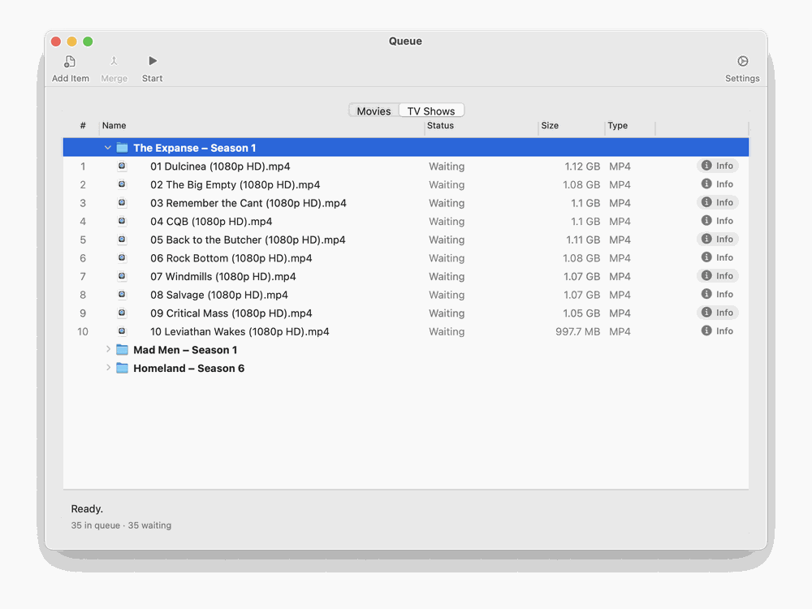

Tag one file. Welcome window → Tag One File → Search Metadata → choose a result → Save & Close. The file is changed in place and moved to Ready for Media Library; no original is kept and nothing goes to the Trash.
Process a download automatically. Add the Incoming Folder, tick Automatically watch, optionally tick the auto-approve and auto-merge options. New downloads appear in the Queue; open any row that shows a waiting state; click Start.
Merge parts by hand. Add the parts to the Movies Queue, select them, click Merge, drag them into order, confirm, and choose where to save.
Handle TV episodes. Episodes found by Intake go to the TV Shows Queue. Turn on Organize into Show/Season folders under Settings → Filename to have them filed as Show/Season 01/…. Files you add by hand are sorted the same way: a file whose name has a season and episode marker (such as S02E05 or 2x05), or that sits in a Season folder, goes to the TV Shows tab, and any other file goes to the Movies tab, whichever tab you dropped it on. The status line says when files were moved to the other tab. A folder that holds both movies and episodes is split file by file, and a show folder with Season folders is added as one group per season. If M3 gets one wrong (a file named badly, say), open it with Edit… and change its media type there.

Find files that need tagging. Welcome window → Scan Library for Missing Metadata.
Undo a mistake. Before you save, use Edit → Undo in the editor. After Save or Save & Close a single file cannot be restored by M3, because it was edited in place; use your own backup. For files moved by the Queue’s cleanup options, open the Trash and choose Put Back.
Start over with a stuck download. Remove its row, make sure the file is in the Incoming Folder, and click Reset Scan….